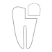

Root Canal
an inside job
Damage to the tooth nerve can lead to extremely painful consequences, however a root canal procedure can help get you out of pain quickly and also keep the tooth in a working condition for years to come.
What to expect
-
 Duration 90-120 min
Duration 90-120 min -
 Oral anesthetic use
Oral anesthetic use -
 Possible minor sensitivity
Possible minor sensitivity -  Tooth colored build up
- Possible post operative sensitivity to biting or chewing
-
 Avoid eating until numbness wears off
Avoid eating until numbness wears off
Why does a tooth hurt in the first place
To understand why teeth can cause so much pain lets review the anatomy of a tooth. Here on the diagram we can see that Pulp or the tooth nerve is surrounded by Dentin, which is covered by a cap of enamel.
A tooth can cause pain typically due to one of the following reasons:
- Crack or Fracture Cavity or Tooth Decay Both of these events will irreversibly inflame the nerve, a common symptom of pulpal inflammation is shooting pain, sever sensitivity to hot or cold, and spontaneous pain. A common rule of thumb is that if you tooth wakes you up, there is a problem.
- Tooth infection This event occurs after the inflamed nerve dies and bacteria populates the nerve space of the tooth. Pretty soon the bacterial waste products begin leaking into the surrounding bone causing abscess formation. At this stage people can get painful swellings that can potentially be life threatening.
How it is accomplished
The whole point of the root canal procedure is to remove the inflamed nerve tissue, sterilize the inside of the tooth from any bacteria, and finally to fill the space with a material that will prevent any future invaders from colonizing the pulpal space.
The remaining pulpal space is filled with biocompatible material called Gutta Percha. This will keep the inside of the tooth sterile and the surrounding bone healthy.
Finally, all the affected tooth structure is build back up with composite material.The process is known as build up.
A strong word of caution
At the completion of the root canal procedure it is strongly recommended to reinforce the tooth by a crowning procedure. This will prevent future fractures of the tooth.